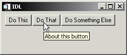

You can specify a “tooltip” — a short text string that will appear when the mouse pointer hovers over a button widget — by specifying the string as the value of the TOOLTIP keyword to WIDGET_BUTTON.
|
 |
Note: Tooltips cannot be created for menu sub-items. The topmost button of a pulldown menu can, however, have a tooltip.